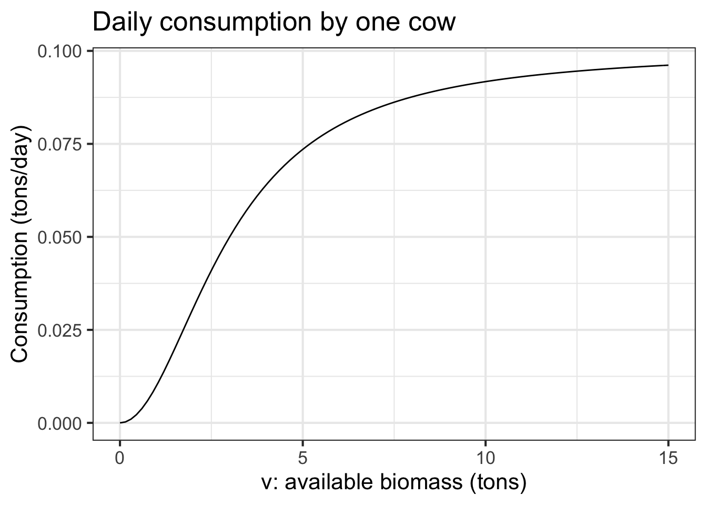

40.1 Equilibrium and stability
- Classify fixed points as stable/unstable given the dynamics
- Identify the dynamics of constant growth
- Compute Euler solutions (format for expressing the system and the format of the result)
- Analyze models in application contexts (for example May’s Cows - a model of bistability in ecology)
- Examples of linearization: Newton’s Law of Cooling, Hooke’s Law
Last year’s daily digitals from DD-15 to about DD-20
Many of the natural and constructed objects and systems that we encounter—buildings, bridges, airplanes, the orbits of satellites, heating systems, birds in flight, and so on—are more fully understood if seen as dynamical systems. That may seem strange; a building doesn’t move (we hope!), an airplane stays in steady flight, the seasons have been steady in their progression for as long as records have been kept. And yet … a building might be shaken and even destroyed by an earthquake, airplanes require pilots and control systems for steady flight. Even satellites in far Earth orbit can drift from their desired positions and attitudes and require control corrections.
A system is said to be in steady state when it stays put, unchanging. Another term often used to express such constancy is equilibrium which occurs when the various forces or processes acting on the system balance out. In the language of dynamical systems, the equilibrium state of a system is called a fixed point. Mathematically, this is a coordinate in the state space where all the right-hand sides of the differential equations equal zero. For a two-dimensional system with dynamics \[\partial_t x = f(x, y)\\\partial_t y = g(x,y)\], a fixed point will be a particular value for the state which we’ll write as \((x^\star, y^\star)\) where both \(f(x^\star, y^\star) = 0\) and \(g(x^\star, y^\star) = 0\).
40.2 First-order dynamics
We start our exploration of the mathematics and phenomena of fixed points with first-order dynamical system, that is, systems that have a single state variable. (We’ll use the letter \(x\) for the state variable, even though the context might provide a more descriptive name.)
A fundamental first-order system is \(\partial_t x = a x\). To find the fixed point, find a state value \(x^\star\) such that the right-hand side of the differential equation evaluated at \(x^\star\) gives zero. This is a solving task and simple inspection gives the solution: \(x^\star = 0\).
To develop intuition, consider the flow field of \(\partial_t x = a x\). Since there is only a single state variable, \(x\), the state space is simply the number line, not a two-dimensional region as in the rabbit-fox dynamics. The flow arrows will point one way or the opposite along the number line, as in Figure 1:Figure 1: The flow field of \(\partial_t x = ax\) for \(a > 0\).
Simple as Figure 1 is, it pays to examine it closely. Each arrow shows \(\partial_t x\) at one point in the state space. The rightmost arrow is long and points to the right, that is, to larger values on the number line. As you move leftward, the arrows get shorter but continue to point to the right. This corresponds to \(ax\) getting smaller as \(x\) heads toward zero.
Similarly, the leftmost arrow is long and points to the left, that is toward more negative values of the number line. As you move rightward from that leftmost arrow, the arrows get shorter but continue to point in the negative direction.
In the middle, the arrows are very short. The fixed point is in between the adjacent left-pointing arrow and right-pointing arrow. We’ve marked this with a small dot.
Although Figure 1 is faithful to the one-dimensional state of \(\partial_t x = a x\), it doesn’t clearly show what is happening between consecutive arrows. For this reason, we are going to construct a special-purpose display intended only to show dynamics on the phase line. In this display (Figure 2) we’ll draw a graph of the dynamical function using the phase line as the horizontal axis and a vertical axis to show the numberical value of \(\partial_t x\) at each point along the horizontal axis.
Figure 2: A display showing the value of \(\partial_t x\) as a graph, and the flow field as arrows.
In this diagram, you can see that the flow arrows point rightward where \(0 < \partial_t x\) and point leftward where \(\partial_t x < 0\). The fixed point is at \(\partial_t x = 0\), that is, in-between the left- and right-pointing arrows.
From the graph of \(ax\) in Figure 2, you can see that \(0 < a\) in this example. The case for \(a < 0\) is very similar, but there is a fundamental difference in behavior. Let’s look first at the flow plot in Figure 3.
Figure 3: The flow field and graph of \(\partial_t x\) for \(\partial_t x = a x\) with \(a < 0\).
As always, where the value of \(\partial_t x\) is positive, the flow arrows point to the right and, when \(\partial_t x\) is negative, the flow arrows point to the left. The fixed point is where \(\partial_t x = 0\).
The fundamental difference between the \(0 < a\) case and the \(a < 0\) case has to do with whether and where the state variable reaches an equilibrium. In Figure 3, all flow arrows point toward the fixed point. This means that whatever is the initial condition \(x_0\), eventually the system will end up at the fixed point \(x^\star\) (which is \(x^\star\) in this example).
Such behavior of converging to a fixed point is said to be stable.
In contrast, when \(0 < a\) (Figure 2), all flow arrows point away from the fixed point. Whatever the initial condition \(x_0\)—with one exception—the state will head away from the fixed point. If \(0 < x_0\), the state will grow more and more positive. If \(x_0 < 0\), the state will grow more and more negative. The exception is when \(x_0 = 0\). If the state is exactly on the fixed point, it will stay there. Such a situation is said to be unstable, since any minute movement of the state off the fixed point will lead to the state moving farther and farther from the fixed point.
There’s nothing in the differential equation \(\partial_t x = a x\) that provides a mechanism to move off the fixed point, if it starts exactly on it. However, for a physical system \(\partial_t = a x\) is a model and may not represent aspects of the complete system. A case in point: stand a pencil on its tip and let go. If \(\theta\) is the angle the pencil makes with the vertical, a simplistic model of the dynamics is \(\partial_t \theta = a \sin(\theta)\), with \(0 < a\). This model has a fixed point \(\theta^\star = 0\) and so, according to the model, if you can start the pencil standing exactly vertical, it should stay there. But any disturbance—a whisper of breeze, a gnat flapping its wings nearby—will push the pencil out of its vertical equilibrium. You can easily see what happens by doing the experiment: stand a pencil on its tip and let go.
Nonlinear systems can have multiple fixed points. The differential equation \(\partial_t x = x(1-x)\) has two: one at \(x^\star = 0\) and the other at \(x^\star = 1\). The flow-field/dynamics-graph (Figure 4) makes it clear that one of these is stable and the other unstable.
Figure 4: Flow field and dynamics function for \(\partial_t x = x (1-x)\). The fixed point at \(x^\star=0\) is unstable; that at \(x^\star =1\) is stable.
For the system in Figure 4, a initial condition \(x_0 = 0.05\) or any other small positive number will produce a trajector that moves slowly to the right at first, then faster, then slows down again for asymptotically approaching the fixed point at \(x=1\). In a time series plot, \(x(t)\) is a sigmoidal function.
::: {.intheworld data-latex="“} We have been using the differential equation \(\partial_t x(1-x)\) as a mathematical equation, but the form has important applications in population modeling and ecology. When parameterized, the model becomes \[\partial_t x = h(x) \equiv r x \left(1 - \frac{x}{K}\right)\] For \(x \ll K\), the dynamics are approximately \(\partial_t x = rx\), which is the recipe for exponential growth. Such growth is often seen in small populations. But”small" compared to what? To answer that, look at the situation for \(x \approx K\). In this domain, the growth will be much smaller, because \((1 - x/K) \approx 0\). There’s a fixed point at \(x^\star = K\), and for \(K < x\) the time derivative of \(x\) is negative.
In ecology, the population size that can just barely sustain itself without growth or decay is called the carrying capacity. Putting these different behaviors together, \(\partial_t x = h(x)\) is a model of growth of a population when the environment has a finite carrying capacity. The pattern of change in such an environment is called logistic growth, but might as well be called “sigmoidal growth.” (The function \(f(x) = \frac{e^t}{1 + e^t}\) is called the “logistic function.”)
In this problem, we’re going to build a somewhat more complicated model of an ecosystem, based on the logistic growth model for grass.
To turn a field of growing grass into an ecosystem, we’re going to add grazing cows to the field. A grazing cow has an impact on a field. To simplify, consider a single cow. She eats until she’s full, then takes time off to chew the cud with other cows and ruminate on the day’s events. But, if grass is very scarce, she may not be able to consume all that she would otherwise eat. She’ll be a hungry, ill-fed cow.
When building a model, start by thinking what you want to use the model for. Imagine that we’re interested in sustainability, that is, whether the cow/grass ecosystem is stable. And, since cows are raised for a purpose, we’d like to use the model to find out whether the cow would be well fed and how things would change if another cow were added to the field. Sustainability is a question about dynamics. Here, the system would be sustainable if the field produces more grass in a day than the cow (and her herd-mates if any) consumes consumes in a day.
We’ll model a cow’s consumption as a sigmoidal function consumption(v) of the amount of grass (v – for “vegetation”) available. Like this:

Question A At what level of available biomass is the cow most hungry at the end of the day? (Hint: Think about how you would measure how hungry a cow is at the end of the day.)
- 2 tonsExcellent! The consumption function is steepest here, meaning that if more grass were available the cow would eat the biggest proportion of it.
- 5 tons︎✘ “Most hungry” suggests and extreme value of something. There’s nothing extreme values in the middle.
- 10 tons︎✘ “Most hungry” suggests and extreme value of something. There’s nothing extreme values in the middle.
- 15 tons︎✘ Even if more grass were available, the cow wouldn’t each much of it.
The cow’s consumption is one part of the dynamics. If there were no grass growing, the dynamics would be \[\partial_t G(v) = - H \times \text{consumption}(v)\] where \(H\) is the number of cows in the herd.
Essay question tmp-1: Explain why there is a minus sign in the previous dynamics.
A more complete model will take into account the intrinsic growth of the grass when there are no cows. We’ll use a logistic model with a carrying capacity of 25 tons of grass in the field. \[ \partial_t v = \frac{v}{3} \left(1-\frac{v}{25}\right)\] This means that, with no cows grazing, the field would reach an equilibrium with 25 tons of vegetation. Subtracting daily consumption from daily growth of grass gives the rate of change of the biomass of grass.
knitr::knit_exit()